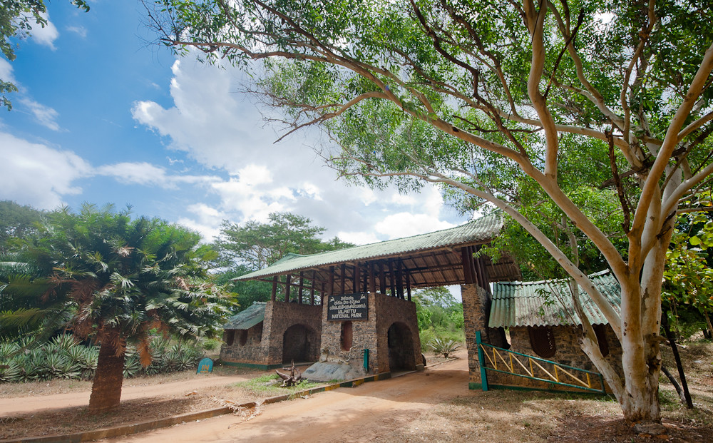
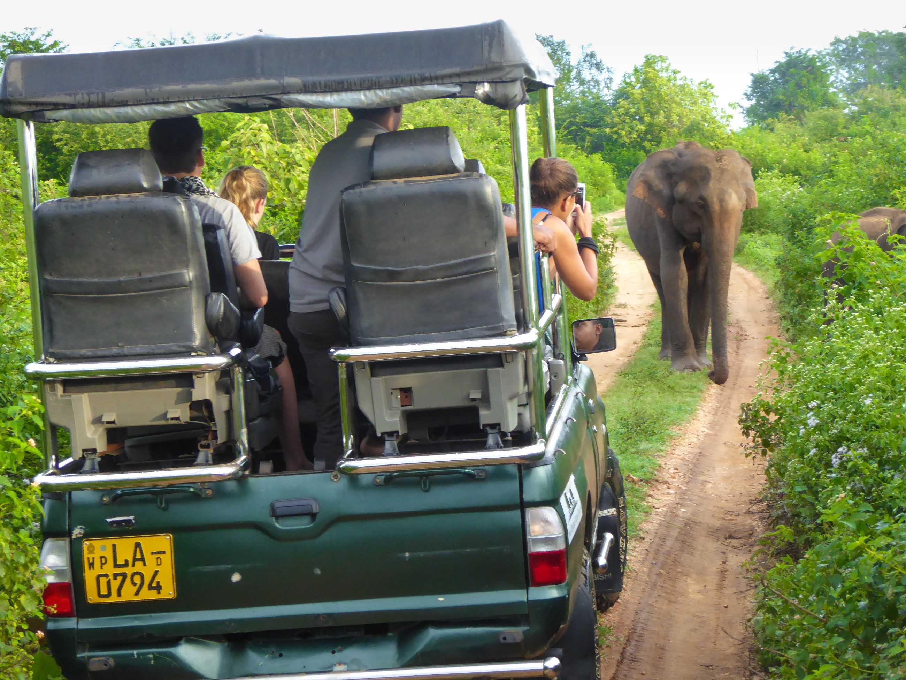
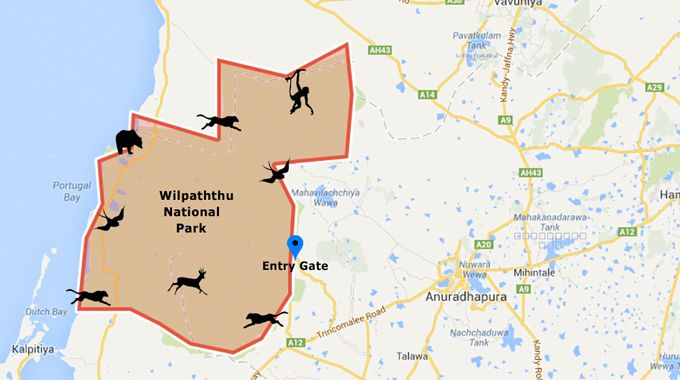

Welcome to Wilpattu National Park
Wilpattu National Park is the largest national park in Sri Lanka. It is located in the northwest coast lowland dry zone of Sri Lanka. The park is index to a variety of wildlife including elephants, leopards, sloth bears, water buffalo, and spotted deer.
Animals of Wilpattu National Park
Wilpattu National Park is index to a variety of animals including:
- Elephants
- Leopards
- Sloth bears
- Water buffalo
- Spotted deer
Visiting Wilpattu National Park
Wilpattu National Park is open to visitors from 6:00 AM to 6:00 PM. Visitors are required to obtain a permit from the Department of Wildlife Conservation before entering the park. The park is closed during the months of September and October due to the monsoon season.
History
The Mahavansa records that in 543 BC Prince Vijaya landed at Tambapanni now known as Kudrimalai Point (Horse Point), established the Sinhalese kingdom in Tambapanni and founded the Sinhala nation. In 1905 the area was designated a sanctuary and in 1938 it was upgraded to the National Park status.' Kudrimalai, or Horse Point, was visited by a subject of Emperor Claudius in 47 AD, who was blown off course by the monsoon. The local king later sent his own envoys to Rome during the time of Pliny.
